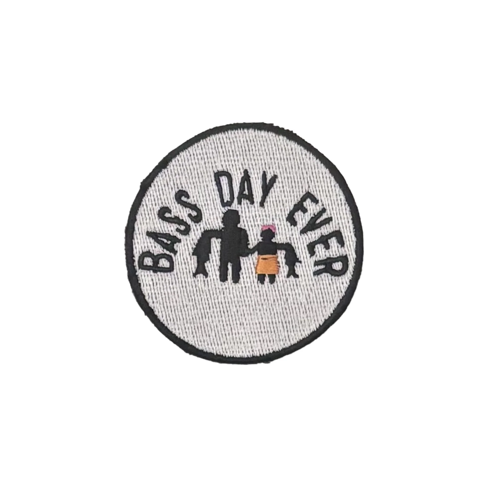
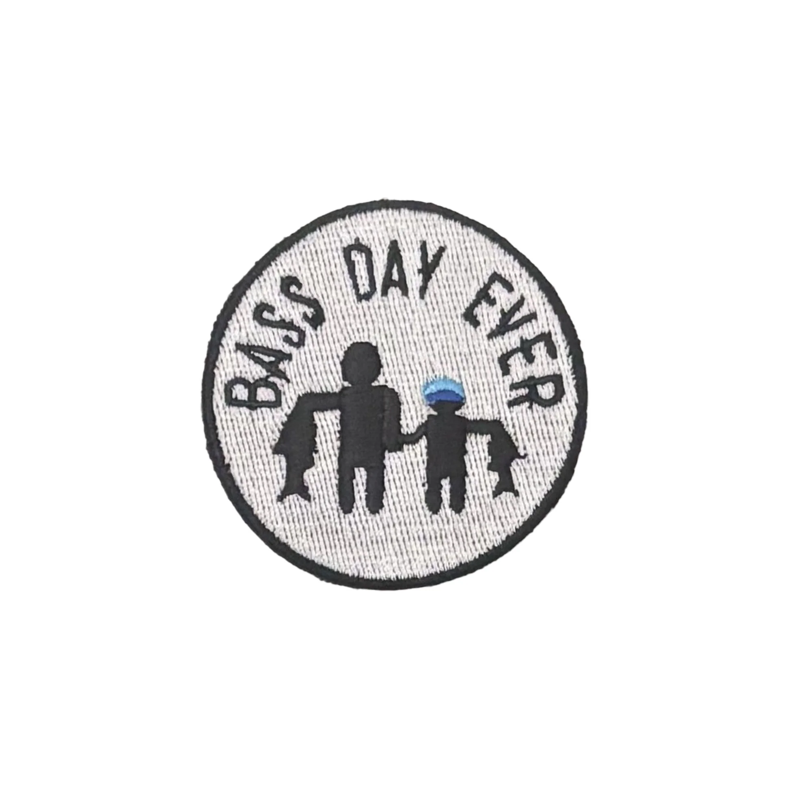
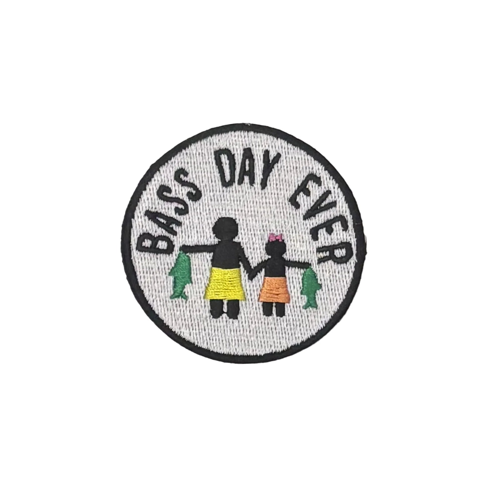
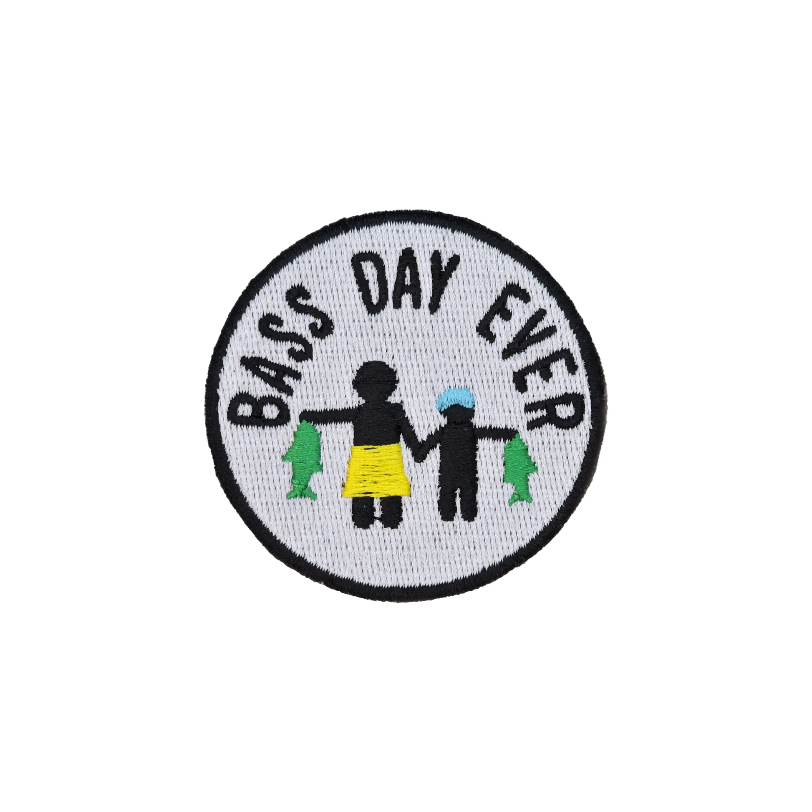

Father + Daughter
The days she'll remember.
Fishing. Family. Dogs. Good times. Built around the people and stories that make a day on the water worth remembering.
EXPLORE THE PATCHES →Fishing has its own language, its own people and its own ideas. The family patch collection makes the people you fish with part of what you wear.

The days she'll remember.

Pass it down.

Two generations on the water.

Make the memory.
The whole-family graphic is now part of the presentation too — no generic patch placeholder standing in for it.
Have a fishing product, original design or lake-life idea? Put it in front of people who actually live this lifestyle.
LEARN ABOUT SELLING YOUR GEAR →Show what you created.
02 • JOIN THE COMMUNITYPut it in front of fishing people.
03 • GET IT OUT THERETurn the idea into something people can discover.